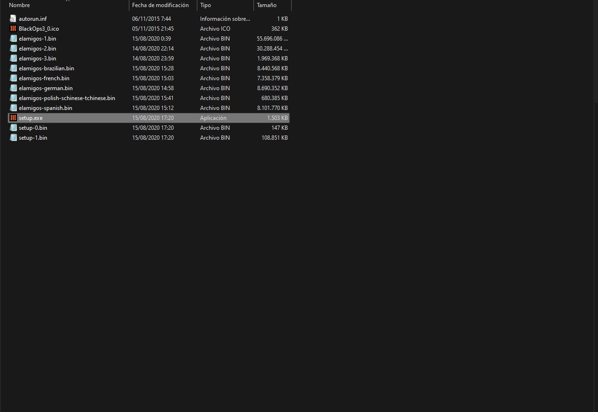

Descargar juego o DLCs
Necesito el juego completo
¿Qué obtendremos?
Si seguimos los siguientes pasos, obtendremos el Black Ops III con todos los DLC's y el Zombies Chronicles.
También tendremos el BOIII.exe, un launcher que nos permite jugar con amigos que también lo tengan.
Requisitos:
Si no lo tenemos ya, necesitaremos un programa para descargar torrents, recomiendo Qbitorrent.
Winrar también será necesario.
Sólo si queremos jugar con amigos, tendremos que descargar Radmin VPN.
Descargar e instalar el juego
Descargaremos el RAR que contiene el archivo del juego.
Daremos click derecho en el .rar y extraeremos los archivos en una carpeta temporal.
Después, abriremos el "Call_of_Duty_Black_Ops_III_v100.0.0.0.0.torrent", marcaremos la ruta donde deseamos descargar el instalador y luego le daremos en Aceptar.
Una vez se descargue por completo, entraremos en la carpeta en la que guardamos los archivos.
Ahí, seleccionamos todos los .rar (59 archivos), le damos click derecho y "Extraer aquí".
El resultado será una carpeta con el archivo Call of Duty Black Ops III.iso
Entraremos en el archivo y luego en el setup.exe para proceder con la instalación del juego.

Tendremos que seguir los pasos de la instalación, indicar la ruta donde queremos guardar el juego y completarla.
Jugar Online
Para jugar online, tendremos que escargar los archivos del launcher boiii.exe.
Iremos a la carpeta del juego y borraremos todos los archivos que no son carpetas.

Después, extraeremos los archivos dentro del Update 42.rar que acabamos de descargar dentro de la carpeta del juego.
El juego lo iniciamos en el boiii.exe, podemos crear un acceso directo y enviarlo al escritorio.
Tengo el juego comprado, me faltan DLCs
¿Qué obtendremos?
Si seguimos los siguientes pasos, obtendremos todos los DLCs del juego. (Solo serán jugables desde el BOIII.exe)
Requisitos:
Si no lo tenemos ya, necesitaremos un programa para descargar torrents, recomiendo Qbitorrent.
Descargar el torrent con los mapas.
Descargar el archivo de traducción a Español (necesario si tenemos el juego en español).
Descargar el boiii.exe.
Instalar y jugar los DLCs
Ubicadamos la carpeta del juego en Steam. Entramos a la Biblioteca --> en la página del juego --> Administar --> Propiedades --> Archivos Instalados --> Explorar...
Suele estar en (C:\Program Files (x86)\Steam\steamapps\common\Call of Duty Black Ops III)
El primer paso será descargar el torrent en una carpeta temporal.
Cuando se complete la descarga, arrastraremos los archivos a la carpeta del juego y los remplazaremos.
Haremos lo mismo con el archivo de traducción al español.
El siguiente paso es pegar el boiii.exe en la carpeta del juego.
Si queremos jugar sin el launcher, ejecutamos el Black Ops III.exe y si queremos jugar con el launcher ejecutamos el boiii.exe.
Por último, tendremos que entrar en Steam --> Biblioteca --> Entramos en Black Ops III --> Propiedades --> DLC --> y asegurarnos de tener descargado el "Multiplayer DLC Trial Pack".
Tengo el juego completo comprado, pero mis amigos juegan en boiii.exe
Requisitos:
Descargar el BOIII.exe.
Instalar el Launcher
Ubicadamos la carpeta del juego en Steam. Entramos a la Biblioteca --> en la página del juego --> Administar --> Propiedades --> Archivos Instalados --> Explorar...
Suele estar en (C:\Program Files (x86)\Steam\steamapps\common\Call of Duty Black Ops III)
El siguiente paso es pegar el boiii.exe en la carpeta del juego.
Si queremos jugar sin el launcher, ejecutamos el Black Ops III.exe y si queremos jugar con el launcher ejecutamos el boiii.exe.
Por último, tendremos que entrar en Steam --> Biblioteca --> Entramos en Black Ops III --> Propiedades --> DLC --> y asegurarnos de tener descargado el "Multiplayer DLC Trial Pack".
Jugar con amigos partidas privadas
Requisitos
Para crear una partida privada necesitaremos descargar el Radmin VPN.
Jugar privadas con amigos
Tendremos dos opciones dependiendo de si creamos la partida o la crea un amigo.
Opción 1- Somos el Host de la partida:
Iniciamos el Radmin, seleccionamos Red --> Crear Red --> Registramos un nombre e inventamos una contraseña. Tendremos que pasárle estos datos a nuestros amigos.
Con el Radmin encendido, creamos una partida privada y entramos(nuestros amigos se unirán cuando nosotros ya estemos en la ronda 1).
Opción 2- Queremos unirnos a la partida:
Iniciamos el Radmin, seleccionamos Red --> Unirse a Red --> Ingresamos el nombre y contraseña que nos dará el Host.
Con el Radmin encendido, copiamos la dirección IP del Host de nuestra red y entramos en el juego.
Una vez dentro del menú, presinaremos una de estas teclas para abrir la consola del juego (a la izquierda del 1 o a la derecha de la P).
En la consola escribiremos lo siguiente y le daremos al enter. Cambiamos IP por la dirección IP que copiamos del Host: connect IP
Cuando todos los jugadores estemos espectando al host dentro de la partida, le diremos que pase a la ronda dos y podremos unirnos.
¿Para descargar customs?. En esta sección, tendrás una guía de cómo descargar cualquier mapa e instalarlo.